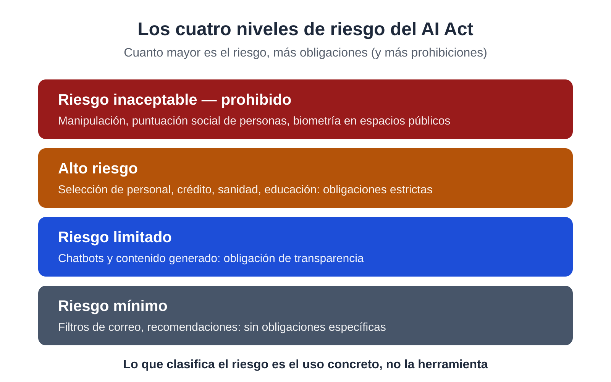

Qué es el AI Act
El AI Act corresponde al Reglamento (UE) 2024/1689. Es la primera normativa a nivel mundial que regula la inteligencia artificial basándose en el riesgo que genera su uso. Al igual que el RGPD, se aplica directamente en todos los países de la Unión sin necesidad de que España lo transponga a una ley propia. Está vigente desde 2024.
Tabla de fechas:
| Fecha | Qué ocurre |
|---|---|
| 1 de agosto de 2024 | Entra en vigor el Reglamento |
| 2 de febrero de 2025 | Se aplican las prácticas prohibidas y la obligación de alfabetización (Artículo 4), la que afecta a este curso |
| 2 de agosto de 2026 | Empiezan a vigilar las autoridades nacionales (en España, la AESIA) |
| Julio de 2026 | El Reglamento (UE) 2026/1744 (Ómnibus digital sobre IA) matiza el Artículo 4 y reajusta el calendario de las obligaciones de alto riesgo |
Las normas sobre prácticas prohibidas, la alfabetización y la transparencia ya están en vigor y afectan al uso cotidiano.
A quién obliga: proveedor y responsable del despliegue
El Reglamento distingue dos funciones:
- Proveedor: quien desarrolla el sistema de IA o lo comercializa con su nombre. Es el caso de Microsoft con Copilot.
- Responsable del despliegue (deployer): quien usa el sistema en su actividad profesional. Es el caso de tu empresa (Artículo 3.4).
La normativa no establece un umbral de tamaño. La obligación de alfabetización se aplica a una empresa de cinco empleados de la misma forma que a una de cinco mil. El requisito es el uso de IA en el entorno laboral.
Cómo se organiza: por niveles de riesgo
El AI Act no prohíbe ni autoriza "la IA" de forma general, sino que clasifica los usos. La regulación depende de la actividad. A continuación se detallan los cuatro niveles, ordenados de mayor a menor restricción.
Puntos clave: (1) el riesgo depende del uso y no de la herramienta; (2) tu empresa es responsable del despliegue cuando utiliza IA en su trabajo; (3) una oficina que redacta, resume y busca información no se considera de alto riesgo, pero tiene obligaciones: la formación del Artículo 4 es la principal.
Sección 1: Riesgo inaceptable — prohibido
Son los usos que la Unión considera contrarios a los derechos fundamentales. Están prohibidos desde febrero de 2025 y no admiten excepciones:
- Técnicas que manipulan el comportamiento de forma subliminal o engañosa.
- Puntuación social de personas (clasificarlas por su comportamiento o características con efectos perjudiciales).
- Biometría en espacios públicos con fines policiales en tiempo real y la creación de bases de datos de reconocimiento facial por rastreo indiscriminado de internet.
- Reconocimiento de emociones en el trabajo y en la educación.
- Inferencia de datos sensibles (ideología, religión, orientación sexual) a partir de datos sueltos.
Aunque estas prácticas no afectan a la gestión de una oficina, es necesario conocerlas. Representan los límites que ningún proveedor puede ofrecer ni tú puedes contratar.
Sección 2: Alto riesgo
Aquí entran los sistemas que pueden afectar a derechos importantes: selección y gestión de personal, acceso a crédito, sanidad, educación, servicios esenciales, migración y justicia.
Si un sistema es de alto riesgo, la organización que lo usa tiene obligaciones reforzadas: gestión de riesgos, registro de actividad, información a las personas afectadas y supervisión humana (Artículo 14), con formación específica del personal que lo maneja (Artículo 26).
El nivel de riesgo depende de la actividad y no del programa. El uso de Copilot para redactar un correo no es de alto riesgo, pero un sistema que filtra currículums sin intervención humana sí lo es. Si tu empresa utiliza IA para tomar decisiones sobre personas, entra en este nivel y requiere asesoramiento específico.
Sección 3: Riesgo limitado
Son los sistemas que interactúan con personas o generan contenido. Aquí las obligaciones son de transparencia: hay que avisar de que se está hablando con una IA (por ejemplo, en un chat de atención al cliente) y marcar el contenido generado o manipulado (por ejemplo, un vídeo o una imagen sintética).
En el entorno de oficina, este nivel implica aplicar criterio: comprender que lo que genera la IA puede no ser cierto y que el contenido sintético debe identificarse al difundirse.
Sección 4: Riesgo mínimo
Todo lo demás: filtros de correo no deseado, recomendaciones de productos, correctores, buscadores. No tienen obligaciones específicas más allá de las generales de protección de datos y de consumo.
La mayoría de las tareas diarias en una oficina se sitúan aquí: redactar, resumir, buscar, ordenar y traducir. Este curso enseña a realizar estas funciones con criterio, ya que la ausencia de obligaciones específicas no elimina riesgos como las alucinaciones, los problemas de permisos o el tratamiento de datos personales.